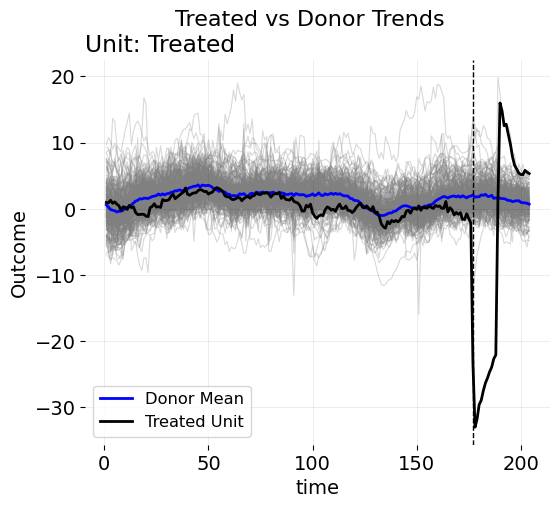

What is a Synthetic Control?
Econometrics
Causal Inference
Introduction
Marketers and econometricians stress the importance of location selection for geo-testing/program evaluation for the effect of advertising interventions. Inherently speaking, the control locations we use directly impacts the quality of our counterfactual predictions, and therefore the ATT, iROAS, or whatever metric we claim to care about. The reality is, you can’t simply take an average of randomly selected control regions and compare them to the places you’re increasing ad runs in. Therefore, researchers require systematic control group selection methods for the panel data setting where the randomzied controlled trial is not possible. Of course, one of these methods that’s popular is the synthetic control method. But if you’re reading this, you likely already know this. However, we need to take a step back. We need to ask ourselves more fundamentally what we think a synthetic control is as a concept. This happens in academia or industry all the time. My coworkers will ask me questions like, “Hey Jared, how do you view the whole constraints upon the weights for synthetic control methods? Why do we care, if at all, that the weights should be non-negative or add up to anything, and are there any rules regarding these ideas?” Usually people want to make some custom extension to the baseline algorithm, and want to know if they’re breaking some seemingly sacrosanct rules. My answer is usually some variant of: “Well, it depends on what you think a synthetic control is.” As it turns out, this is actually a non-trivial philosophical question that has no true answer.
Classically, synthetic control weights are viewed as a sparse vector, and plenty of academic work has developed synthetic control methodologies from this perspective. The classic setting focuses on sparsity for the unit weights. The point of sparsity, as others (including me) argue is for the resulting positive donors to be interpretable and economically similar to the units of interest to the treated unit. More precisely, the goal is for similarity on latent factors that we cannot observe. Much work is dedicated to producing such descriptions of the SCM. Others argue however for a completely different set of standards. The main contention seems to be that while sparsity offers interpretability and simplicity, it may not always be practical for capturing the complex relationships in real economic or business phenomena. Instead, they advocate for dense coefficient vectors that distribute weights more diffusely across donors, potentially improving predictive performance.
In my opinion, the general form of a synthetic control problem is some objective function where we weight donor units to best approximate the treated (set of) unit(s), with the choice of constraints reflecting both the econometric goals and domain-specific beliefs. The most general expression for this is
\[ \begin{aligned} \min_{\mathbf{w}} \quad & \mathcal{L}\big( \mathbf{y}_1, \mathbf{Y}_0 \mathbf{w} \big) + \lambda \cdot \mathcal{R}(\mathbf{w}) \quad \text{subject to} \quad & \mathbf{w} \in \mathcal{W} \end{aligned} \]
where \(\mathbf{y}_1\) is the vector of observed outcomes for the treated unit(s) during the pre-treatment period, \(\mathbf{Y}_0\) is the matrix of outcomes for the donor pool units over the same period, and \(\mathbf{w}\) is the vector of weights assigned to those donor units. The function \(\mathcal{L}(\cdot, \cdot)\) represents the loss function measuring the discrepancy between the treated outcomes and the weighted combination of donors, commonly the squared error loss. The term \(\mathcal{R}(\mathbf{w})\) is a regularization function that imposes additional structure or penalties on the weights to reflect beliefs or promote certain properties like sparsity or smoothness. The scalar \(\lambda \geq 0\) controls the trade-off between fitting the data closely and respecting the regularization. Finally, the set \(\mathcal{W}\) defines the feasible set of weights, encoding constraints such as non-negativity, sum-to-one, or other domain-specific restrictions. Notice that this setup is intended to be very very general. I have not yet taken a position on the nature of the weights or the specifics of the optimization problem.
This post shows that there is (often) no one right way to play. Many estimators may be used, and the key thing is the underlying econometric assumptions one needs to understand and make to use them effectively (sparsity vs density of course is not the only assumption of interest).
Application
Let’s use an example. Consider this plot of a growth rate variable, where the outcome is the number of products purchased when some advertising campaigns went into effect. The goal of an incrementality study is to estimate how the growth of sales would have evolved absent the ads. After all, this is how we determine if the ad spend was effective or if it was wasted—by estimating how much revenue we would have generated without any advertising. In this dataset, we observe 276 control units across 176 pre-treatment time periods. The key problem of interest is that there are very many control units to choose from. We cannot simply use the average of controls as a counterfactual estimate, as this presumes that the mean of this entire control group is similar enough (in both level and trend) to the treated unit of interest. As the figure suggests though, this is likely not true. While the growth rate does indeed remove seasonality elements, there are still trend, periodic, and perhaps cyclical differences to account for as well. Given this, it’s likely the case that some reweighted average of these controls will mimic the treated unit much better than the pure average of the control units.
To this end, I fit a festival of models, some sparse, some sense. I fit the forward DID model (sparse), Forward SCM model (also sparse) and the robust PCA SCM model (sparse). For the dense models I estimate the \(\ell_2\) panel data approach and the robust synthetic control (all these are documented here). I construct an ensemble of artificial counterfactual estimators by convexly combining the predictions of the base models. The goal is to produce a flexible estimator that balances the predictive accuracy of dense estimators with the interpretability and sparsity of sparse estimators. Let \(M\) denote the number of candidate models in the ensemble. For each model \(m = 1, \ldots, M\), we obtain a predicted counterfactual series \(\widehat{Y}^{(m)}_{1,t}\) for the treated unit in the pre-treatment period \(t \in \mathcal{T}_0\). We organize these into a matrix \(\widehat{\mathbf{Y}}_0 \in \mathbb{R}^{T_0 \times M}\), where each column corresponds to one model’s predicted values over the pre-treatment period. Let \(\mathbf{Y}_{1,\text{pre}} \in \mathbb{R}^{T_0}\) denote the observed outcomes for the treated unit during the same period. We solve the following convex optimization problem to learn a set of model weights \(\mathbf{w} \in \mathbb{R}^M\):
\[ \min_{\mathbf{w}} \left\| \mathbf{Y}_{1,\text{pre}} - \widehat{\mathbf{Y}}_0 \mathbf{w} \right\|_2^2 + \lambda \left\| \mathbf{w} \right\|_2^2 \quad \text{subject to} \quad \mathbf{w} \geq 0,\quad \sum_{m=1}^M w_m = 1. \]
This is a ridge-penalized model averaging objective, constrained so that the weights are non-negative and sum to one. The penalty term \(\lambda \left\| \mathbf{w} \right\|_2^2\) discourages over-reliance on any single model and promotes stability in the ensemble. We select the regularization parameter \(\lambda\) via \(K\)-fold cross-validation on the pre-treatment period, minimizing the out-of-sample prediction error. The resulting weights \(\widehat{\mathbf{w}}\) define the ensemble counterfactual:
\[ \widehat{Y}^{\text{ens}}_{1,t} = \sum_{m=1}^M \widehat{w}_m \widehat{Y}^{(m)}_{1,t}, \quad \text{for all } t. \]
This procedure allows flexible borrowing of information across model classes, combining the sparse structure of subset-selected synthetic controls with the improved fit of regularized or dense variants, depending on which performs better in-sample. The ensemble is constrained to lie in the convex hull of the candidate model predictions.
/opt/hostedtoolcache/Python/3.13.7/x64/lib/python3.13/site-packages/IPython/core/pylabtools.py:170: UserWarning: There are no gridspecs with layoutgrids. Possibly did not call parent GridSpec with the "figure" keyword
fig.canvas.print_figure(bytes_io, **kw)The results from the model averaging procedure reveal clear trade-offs between sparsity and predictive accuracy. In the sparse model average, the optimal penalty parameter is \(\lambda = 1.7074\), leading to a pre-treatment RMSE of \(0.5028\). Within this specification, the FSCM model receives the most weight (\(0.2085\)), followed by FDID (\(0.7915\)), while RPCA is unused. In contrast, the dense model average achieves a substantially better fit (RMSE \(= 0.3085\)) with a much smaller penalty (\(\lambda = 0.0010\)), allocating nearly all weight to PCR (\(0.9966\)) and very little to PDA (\(0.0034\)). The full model average, which includes both sparse and dense estimators, also selects \(\lambda = 0.0010\) and reaches the same RMSE of \(0.3085\), but nearly all weight again falls on PCR (\(0.9927\)), with RPCA contributing marginally (\(0.0073\)) and all others excluded.
These results underscore a key econometric tension: while dense methods often achieve superior in-sample fit, they can obscure the role of individual donors and reduce interpretability. Sparse methods like FSCM and FDID provide clearer narratives but may underperform in terms of match quality. In settings where both approaches yield similar outcomes—as they do here—the choice between them ultimately depends on the econometrician’s priorities. If transparency and donor interpretability are paramount, sparse models may be preferred. If minimizing pre-treatment error is the guiding objective, dense models may be more appropriate. In this sense, model selection becomes not just a statistical exercise, but a philosophical one as well.
Final Thoughts
In some ways, this also illustrates why I wrote mlsynth. I do not claim to have the best models or know all of the secrets to solve one’s modeling needs; rather, I program models that I think are useful, in certain cases. The point of the mlsynth library is to allow researchers to compare and contrast these different models together all in one singular grammar, without needing to be bogged down in different softwares and syntaxes. Cool stuff happens all the time with these methods, and the only way for them to be used, and used more often, is by providing researchers with a simple framework by which to generate these counterfactuals in settings they care about.
Data Science for Policy Analysts: A Simple Introduction to Web Scraping
Web Scraping
Python
Forward Selected Synthetic Control
Machine Learning
Econometrics
Synthetic Controls With More Than One Outcome
Causal Inference
Econometrics
Synthetic Control Methods for Personalized Causal Inference
Causal Inference
Econometrics
Synthetic Controls Do Not Care What Your Donors Are. So Why Do You?
Econometric Theory
Synthetic Controls With Non-Linear Outcome Trends: A Principled Approach to Extrapolation
Causal Inference
Econometrics
The Iterative Synthetic Control Method
Econometrics
The Synthetic Historical Control Method
Econometrics
Forward Augmented Synthetic Controls
Causal Inference
Econometrics
What Are We Weighting For?
Econometric Theory
No matching items